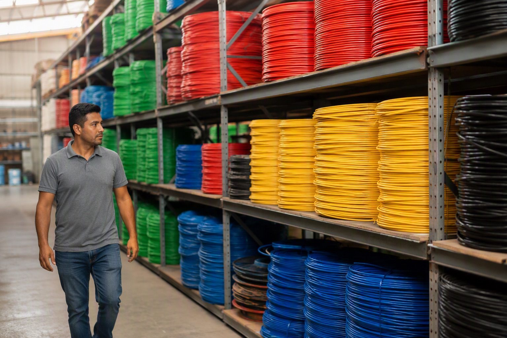

KEI vs Finolex Wires: Which Is Better for House Wiring?

For house wiring in Bangalore, Finolex is the safer choice on availability, verification and resale of leftover coils; KEI is a strong choice where the same order includes power or control cable, because KEI's depth is in the industrial range. On the wire inside the insulation, both are ISI 694 electrolytic copper and both will last the life of the house if the coil is genuine and the size is right.
Who makes what
Finolex Cables has made house wire in Pune since 1958 and is, by volume, the name most Indian electricians default to for a residential job. Its residential ranges are the Silver Pack and Gold Pack FR wire, the Flamegard FR-LSH grade and Finoultra, the halogen-free e-beam range. KEI Industries, based in Delhi, built its reputation on LT and HT power cable, control and instrumentation cable and stainless-steel wire, and added house wire later. Its residential lines (Homecab and Conflame) sit alongside a much larger industrial catalogue.
That history shows in the shops. In Bangalore, Finolex is stocked in almost every electrical retailer and every size and colour is available on the day; KEI house wire is stocked by fewer retailers and more often ordered against a requirement. For a homeowner that matters when the electrician runs short of one colour on a Sunday.
Specification, side by side
| Point | Finolex | KEI |
|---|---|---|
| Standard | IS 694, ISI marked, 1100 V | IS 694, ISI marked, 1100 V |
| Conductor | Multistrand bare electrolytic copper | Multistrand bare electrolytic copper |
| Residential grades | FR (Silver, Gold), FR-LSH (Flamegard), HFFR (Finoultra) | FR, FR-LSH, HFFR / LS0H |
| Coil lengths | 45, 90, 180, 300 / 200 m | 90 and 180 m typical |
| Verification | Outer and inner QR checked on Finolex's server | Hologram and batch printing; brand app where offered |
| Where the brand is deepest | House wire, flexible, telecom and coaxial cable | Power, control and instrumentation cable |
On paper the two are equivalent for a house. Both carry the ISI mark on the same standard; both offer an FR-LSH grade for flats and stairwells. The differences that matter are practical: coil lengths, how you verify a coil, and who stocks it.
Price: what the gap actually is
KEI does not publish a residential list we can reproduce here, so we will not invent a figure. In our own trade, KEI house wire quotes land close to Finolex Silver for the same size, and both brands are sold by dealers at a large discount to list. Mount Cable India's Finolex Silver Pack prices, current to 4 September 2026, are ₹2,257 for 1.5 sq mm, ₹3,683 for 2.5 sq mm and ₹5,592 for 4.0 sq mm per 90 m coil, taxes extra; the full table is on the Finolex price list. If a KEI quote comes in far below those figures, or a Finolex quote does, the coil deserves a scan before payment.
Where KEI is the better buy
- Mixed orders. If the same site needs armoured power cable from the meter, control cable for a pump and house wire inside, a single KEI order simplifies the paperwork and often the price.
- Specified projects. Builders and consultants who already use KEI power cable frequently specify KEI house wire for consistency.
- Industrial and commercial premises, where KEI's control and flexible ranges are the natural fit.
Where Finolex is the better buy
- A house or flat in Bangalore, where every retailer and every electrician knows the ranges and leftover coils are easy to return or sell.
- Verification. The two-QR check on Finolex's own server is the most complete counterfeit check on any Indian wire brand. The Finolex wire scanner does it in ten seconds.
- Long coils. The 300 m and 200 m coils cut the per-metre cost on apartment projects.
Our recommendation
For a home: Finolex Silver or Gold for the wiring, Flamegard FR-LSH in a flat. For a factory, a warehouse or a site with power cable on the same order: KEI across the board. Either way, size the circuits correctly with the wire size calculator, because a genuine coil of the wrong size fails sooner than a genuine coil of the right size in either brand. The four-brand view, with Polycab and RR Kabel included, is in Finolex vs Polycab vs RR Kabel vs KEI.
Want both brands priced for your list? Send it to WhatsApp 88676 76700 and Mount Cable India will quote each brand line by line within 60 minutes, so the comparison is made on real figures rather than list prices. No obligation to buy from us.
Frequently asked questions
Is KEI wire better than Finolex?
Which is cheaper, KEI or Finolex wire?
Does KEI make FR-LSH house wire?
Can I verify a KEI wire coil like a Finolex coil?
Which brand does Mount Cable recommend for a house in Bangalore?
Where can I buy KEI or Finolex wire in Bangalore?
Ready to order for your home?
Upload your wiring list for an instant quote — 100% original material, free next-day delivery across Bangalore.